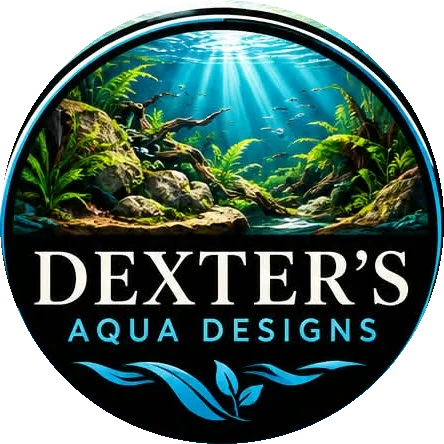

The idea
Build nature. Don't just decorate it.
At Dexter's Aqua Designs we create natural environments that bring the beauty, movement and balance of nature into homes, offices, resorts, restaurants and outdoor spaces. Every project is designed around plants, water, rock, wood, microorganisms and natural processes, so it looks beautiful while working as a living environment.
From a miniature underwater landscape on a tabletop to a large outdoor pond with waterfalls, each ecosystem is designed around its surroundings and the way you want to experience it.
Natural
Inspired by real habitats and natural forms.
Custom
Designed around your space and your vision.
Living
Built to develop, mature and change over time.
How it works
Nature, engineered to work together.
Self-sustaining does not mean maintenance-free. The aim is to design systems that work with natural biological processes and need less intervention.
Our process
From idea to living ecosystem.
Consult
Your space, vision, lifestyle and budget.
Study
Light, water, access, surroundings and practical requirements.
Design
Layout, materials, planting, circulation and the ecosystem concept.
Build
Construction and installation of the living landscape.
Establish
Cycling and biological development before final stocking.
Guide
Handover, care guidance and long-term support.
Let's create
Your own piece of nature.
